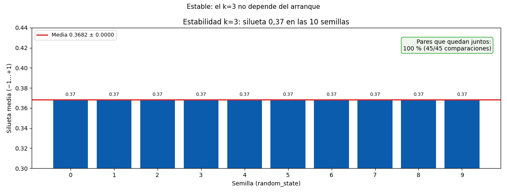

Bloque F · Clustering · Lección 0051 · mar 10 nov
Calidad de clusters y ventajas: cierre del bloque
Win de hoy: defender k=3 con 3 patas (métricas de 0031, estabilidad 10/10 semillas con silueta 0,37 y 100 % de pares juntos, negocio que cuenta 3 edades) y elegir método con la tabla comparativa.
1 · Calidad = 3 patas (ninguna alcanza sola)
Un clustering se defiende con tres evidencias independientes. Si las 3 acuerdan, el k se sostiene; si pelean, hay que contar por qué se elige igual:
- (1) Validación interna (lección 0031, sin repetir la cuenta): codo en 3–4, silueta máxima en k=2 (0,49) con k=3 competitivo (0,37) y solo 19 siluetas negativas en 1436. Los números guían.
- (2) Estabilidad (nuevo, con números): K-Means k=3 con 10 semillas distintas (0–9,
n_init=10como en 0029) da silueta 0,37 en las 10 (media 0,3682 ± 0,0000) y el 100 % de los pares de autos quedan juntos en todas las corridas. Estabilidad perfecta: el k=3 no depende del arranque. (Eln_init=10ayuda: con un solo arranque algunas semillas caen en mínimos apenas peores, 0,368–0,371.) - (3) Negocio (0031 §3): 3 edades que se cuentan — garantía para nuevitos, financiación para medios, repuestos para veteranos. El dominio decide.
Las 3 patas apuntan a k=3: métricas competitivas, estabilidad total y relato de negocio. Así se defiende un k en una reunión, no con "me gustó el 3".
2 · Tabla: ventajas de cada método (el corazón de hoy)
Cuatro herramientas, ningún campeón: cada dato pide la suya.
| K-Means (0029) | K-medoids (0050) | Jerárquico (0030) | DBSCAN (0030) | |
|---|---|---|---|---|
| ¿Pide k? | Sí, exacto | Sí, exacto | No (corte visual) | No (pide eps) |
| Formas | Esferas | Esferas | Cualquiera (árbol) | Cualquiera (densas) |
| Ruido explícito | No (fuerza todo) | No (fuerza todo) | No (todo cuelga) | Sí (167 negros) |
| Outliers | Arrastran centroides | No mueven medoides | Cuelgan al final | Van a ruido |
| Costo | Barato, escala | Caro (swaps ~k·n²) | Caro (matriz n²) | Medio, una pasada |
| Cuándo | Segmentos rápidos | Outlier gordo + prototipo real | n chico, ver anidado | Formas raras + ruido |
No hay campeón, hay herramienta para cada dato: segmentos de negocio → K-Means; un extremo que contamina la media → K-medoids; pocos casos y jerarquía visible → aglomerativo; densidades con descarte honesto → DBSCAN.
3 · Figura: estabilidad por semilla

Regenerar la figura (mismo resultado versionado en assets/img/toyota/):
python3 scripts/make_figures.py --only calidad-ventajas-cierre4 · Quiz (auto-chequeo inmediato)
5 · Fuente primaria y cierre del Bloque F
Para profundizar (1 fuente): James, Witten, Hastie & Tibshirani, An Introduction to Statistical Learning — capítulo 12 (clustering) (statlearning, también en RESOURCES.md del curso). Como segunda referencia, Tan, Steinbach & Kumar, Introduction to Data Mining — capítulo de validación de clustering.
Cierre Bloque F (27 oct–10 nov): distancias (0028) → K-Means (0029) → jerárquico + DBSCAN (0030) → K-medoids (0050) → validación (0031) → calidad + ventajas (hoy). Siguiente → 0039 (Bloque G, mar 17 nov: itemsets).
¿Algo no quedó claro? Preguntame al agente: qué pata flaquea en tu clustering, qué método para tu forma de dato, o cómo defender tu k. Esa pregunta vale más que releer.